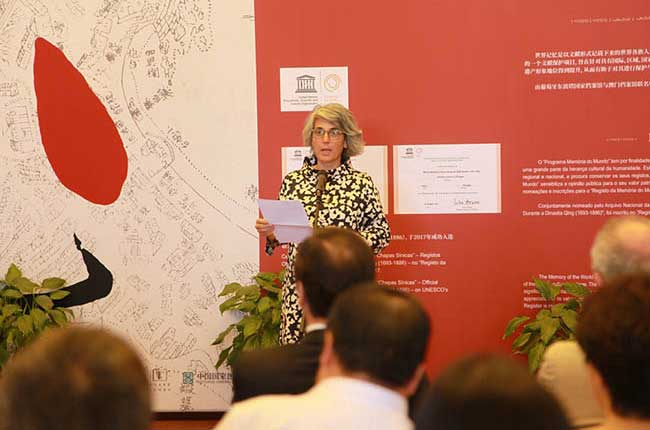
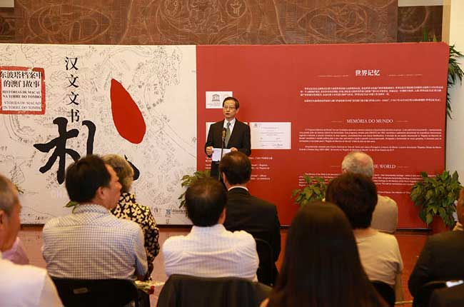
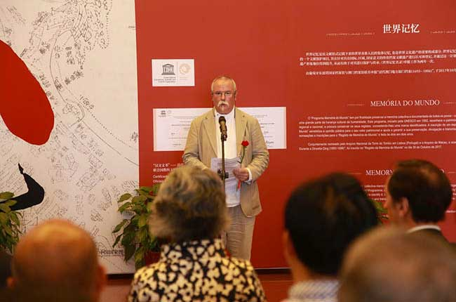

“汉文文书——东波塔档案中的澳门故事”在国家图书馆开展
时间：2019-06-20 来源：国家图书馆
6月10日，为庆祝中葡建交40周年、澳门回归20周年，由中国国家图书馆，葡萄牙书籍、档案馆及图书馆局（东波塔国家档案馆）共同主办的“汉文文书——东波塔档案中的澳门故事”在国家典籍博物馆开展。葡萄牙文化部部长格拉萨·丰塞卡（Graça Fonseca），葡萄牙书籍、档案和图书馆局局长希尔维斯特·拉色达（Silvestre Lacerda），葡萄牙驻华大使杜傲杰（JoséAugusto Duarte），中国文化和旅游部国际交流与合作局副局长郑浩等出席开幕式。中国国家图书馆副馆长陈樱主持仪式。

葡萄牙文化部部长格拉萨·丰塞卡致辞

中国文化和旅游部国际交流与合作局副局长郑浩致辞

葡萄牙书籍、档案和图书馆局局长希尔维斯特·拉色达致辞
本次展览从3600多份“汉文文书”中精选出100余份档案文件进行展出，讲述了“汉文文书”的保护和修复，并将档案文件与清代相关图文资料相印证，展示了从政治交往到日常生活，从税收管理到经济商业利益的协商，再到两个民族间的冲突解决等发生在澳门却关乎中国、葡萄牙甚至印证世界历史重要进程的故事，重现清代澳门丰富多彩的历史图景。这些“汉文文书”不仅见证了1693到1886年间清政府和澳葡议事会之间的官方交流，也展示了两国人民之间的交往的历史，是中葡两国乃至整个世界的重要文化遗产。